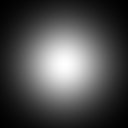

An example of G'MIC scripting:
The idea is to let people discover the possibilities of the G’MIC language for creative coding and quick prototyping. We'll show how to write a G'MIC script that generates the animation below, without going into all the details of the script’s source code.
⇒ You don’t need any prior knowledge of the G’MIC language to follow this tutorial!

Fig.1. 3D balls bouncing on a sheet
Perhaps this will make some people want to go deeper into its use for implementing custom image filters, who knows ? (despite the fact we all know the syntax looks a bit esoteric at a first glance!  ).
).
 At the end, we won’t get exactly the same animation as above, but something really similar (I don’t remember nor saved the exact parameters I’ve used at first to be honest!).
At the end, we won’t get exactly the same animation as above, but something really similar (I don’t remember nor saved the exact parameters I’ve used at first to be honest!). 
Final code will be about 50 lines long. I’ll use G’MIC version 2.9.0, which is the most up to date version, at the time of writing this tutorial. Ready ? So, let’s go for a G’MIC ride!
Step 1: Create a new G’MIC command.
G’MIC is an open-source framework for image processing, and has been thus designed as very versatile and extensible: Anyone is able to define their own custom commands that can be used afterwards in any G’MIC pipeline.
That’s exactly what we will do here: write a single command dedicated to rendering this 3D bouncing ball animation. To do this, we first have to create a new text file tutorial.gmic, define and write the first lines of our new command, let’s name it tutorial3d. This file looks like this:
# This is the content of the file `tutorial.gmic`.
#-------------------------------------------------
tutorial3d :
echo "A cool G'MIC tutorial!"
That being done, the command-line tool gmic is now able to execute our command, from the shell:
$ gmic tutorial.gmic tutorial3d
First we import the G’MIC command file tutorial.gmic, then we call our tutorial3d command (without arguments because our command doesn’t require any).
And here is what we get:
$ gmic test.gmic tutorial3d
[gmic]-0./ Start G'MIC interpreter.
[gmic]-0./ Input custom command file 'test.gmic' (1 new, total: 4202).
[gmic]-0./tutorial3d/ A cool G'MIC tutorial!
[gmic]-0./ End G'MIC interpreter.
By default, gmic is quite verbose, so it outputs what it does on the standard error, with some info about the current command scope for each action. Here, when evaluating command tutorial3d, it prints the message passed as an argument to the echo command.
Now that our command is set up, let’s try to do more complicated things 
Step 2: Create the checkerboard texture.
One of the thing we have to do is to create the checkerboard texture that will be mapped onto the 3D sheet. We need to render a small color image, e.g. with resolution 128x128 (will be enough for our purpose) that represents a white/red checkerboard.
There are several ways to do this. Here, we are looking for a simple checkerboard (no rotations, constant cell size, only 2 distinct colors), thus we can render it by using a simple math formula.
In this case, I propose to use the input command, like this:
tutorial3d :
# Init texture image. <- This is a comment line :)
input 128,128,1,3,"xor(x,y)%16<8?[ 255,0,0 ]:[ 255,255,255 ]"
# ^ ^ ^ ^
# width (128), height (128), depth (1), nb_channels (3 = RGB)
A few explanations:
In G’MIC, any image is specified by its 4 dimensions : width (number of columns), height (number of rows), depth (number of slices, = 1 for 2D images), and spectrum (number of channels, = 3 for RGB color images, and = 4 for RGBA). Pixel values are always float-valued and there are no limitations on the size along each dimension (except the available memory required to store the image). This way, many different types of images can be represented (e.g. the number of channels can be of any value, like 64 or 128, and 3D volumetric dense arrays can be managed as well).
Here, input 128,128,1,3 means we want to create a 2D image of RGB colors with resolution 128x128 (it’s one of the possible list of arguments accepted by command input).
Also, when creating a new image with input, we have the possibility to specify a formula used to initialize the values of the image pixels (as an optional last argument). Without formula specified, all pixel values are set to 0 by default. The formula can be as complex as you want (G’MIC’s mathematical evaluator has actually quite advanced features). It’s good to know that the math evaluator has pre-defined variables that are useful when writing math expressions (e.g., x and y, the two variables corresponding to the 2D coordinates for each pixel to be evaluated).
The formula we wrote in our example looks a bit tricky, but you can verify by yourself, xor(x,y)%16<8 is a condition that evaluates as 0 or 1, following a checkerboard pattern (with tiles of size 8x8). So, depending on the result of this condition, we fill the image pixel with the 3-components vectors [255,0,0] (pure red in RGB) or [255,255,255] (pure white in RGB).
Note that there are not many different types of data that can be manipulated in the mathematical evaluator, apart from real numbers and vectors (this latter type includes complex numbers and strings as well), the latter bein surrounded by brackets [].
Now, if we type $ gmic tutorial.gmic tutorial3d on the terminal, we get this nice checkboard texture displaying on the screen:

Fig.2. Checkerboard texture.
Let’s name it texture (with command name, a.k.a nm), and let’s remove the explicit call to the input command (because input is actually the only command whose shortcut is the empty string!) , and we have the first significant line of our script ready:
tutorial3d :
# Init texture image.
128,128,1,3,"xor(x,y)%16<8?[255,0,0]:[255,255,255]" nm. texture
A few words about the . added as a suffix to the command name (aka nm):
In G’MIC, every newly created image becomes a part of a globally-managed list of images, and after the execution of the input command, our texture image becomes a new item of this list. Each image in the list has an index (starting from 0) and an (optional) name. Our texture image is the very first image we created, so it can now be referred as image [0]. Negative indices can be used: [-1] for the last image of the list, [-2] for the penultimate one, etc… Thus, our texture image can be also referred as [-1] (it’s the first as well as the last image of the list).
A command in G’MIC is able to act on one or several images at a time. A commands accepts a [selection] suffix, to tell on which image(s) it must be applied. In our case, command name has to modify the name of the texture image, so we could write name[0] or name[-1]. The latter selection is so commonly used that it has its own shortcut . (which stands for [-1]). That explains the use of nm. which is actually a double-shortcut for name[-1].
Note that in this case, specifying a selection was not really needed. When no [selection] is given, a command processes all images available in the list, and here we have only a single texture image already in the list. But it’s good to pick up some good habits 
Once our texture image has been named as texture, we can refer it by [texture] (in addition to [0] and [-1]). Giving it an explicit name will actually help us afterwards to not worry about the index it has in the list of images. As we will add more images, [-1] will not be valid anymore in the next steps.
Step 3: Create the background image.
We write a similar line of code to create our background image, which is intended be a vertical color gradient:
tutorial3d :
# Init texture image and background.
128,128,1,3,"xor(x,y)%16<8?[255,0,0]:[255,255,255]" nm. texture
512,512,1,3,"lerp([ 32,128,99 ],[ 0,0,16 ],y/(h-1))" nm. background
The added line defines a 512x512 color image, which is the intended size of our rendered animation frames. Here the formula makes use of the pre-defined math function lerp(a,b,t) which is actually a built-in equivalent to a*(1-t) + b*t, where a and b are the two values we want to interpolate (here, 3-components vectors) that define our color gradient. The interpolation parameter t is equal to y/(h-1) and ranges from 0 to 1 from the top to the bottom of the image.
Now, our list of images contains two images [texture] (i.e. [0]) and [background] (i.e. [1]), which are:

Fig.3. Content of the image list after step 3
Not a bad start!
Step 4: Create a 3D colored ball.
G’MIC has basic 3D rendering possibilities - that are not extraordinary - but sufficient for the type of animation we aim to create. 3D rendering in G’MIC mainly relies on the command object3d (shortcut j3d) that draws/renders a 3D meshed object on a 2D image.
A 3D mesh is actually stored as an image itself in the image list, just as any other images. A 3D mesh is a 1-column image whose pixel values give all required information about its vertex positions, types of primitives, colors, textures, and everything required to render the 3D object properly. While such images can be created from scratch, it’s usually convenient to use one of the several commands available in G’MIC, to create common 3D primitives (e.g. sphere3d, box3d, torus3d,…), set their colors and opacities (color3d, opacity3d), merges 3D objects together (add3d), etc. (the procedural 3D object creation can always lead to nice things).
For now, we just need a 3D sphere that will be our first bouncing ball (others will be added later), so we call command sphere3d:
tutorial3d :
# Init images and display window and 3D ball.
128,128,1,3,"xor(x,y)%16<8?[ 255,0,0 ]:[ 255,255,255 ]" nm. texture
512,512,1,3,"lerp([ 32,128,99 ],[ 0,0,16 ],y/(h-1))" nm. background
sphere3d 10 col3d. 255,0,255 nm. ball3d
Command sphere3d 10 inserts a new 3D meshed sphere with radius 10 at the end of the image list (as a new image [2]). Command col3d 255,0,255 sets the primitive colors to magenta. Finally, command nm. ball3d sets a name to this image, exactly as we did for the previous images.
There are two ways of visualizing image [ball3d]:
- With the command
display[ball3d], that shows the value of its pixels displayed as a 2D image:

Fig.4. Image used to store the 3D mesh data
(yes, it looks like garbage, but it shows clearly how a 3D meshed object is actually stored in G’MIC!).
- Or, with the command
display3d[ball3d], that displays the 3D meshed object in a dedicated interactive 3D viewer:

Fig.5. 3D mesh visualized with G’MIC 3D viewer.
All the actors of our animation are now in place, let’s go animate them!
Step 5: Create display window for animation.
Displaying an animation requires we open a display window, and update frames in it.
In G’MIC, command window (shortcut w) takes care of everything concerning display windows. Thus, opening a new display window containing our background image is as simple as:
w[background] -1,-1,0,"My first 3D animation"
The arguments we give here simply tells that the window size must be the same as the size of the image [background] (here 512x512), and that we don’t want to normalize the values of the images we display in the window (i.e. we will take care by ourselves that the pixel values of our rendered frames stay in range [0,255]). And of course, we’re giving the window a title.
Once the window is opened, we need to set up an animation loop. It won’t do a lot of things right now, except waiting a few milliseconds and test that the window is not closed by the user (or that the key ESC has not been pressed):
tutorial3d :
# Init images, 3D ball and display window.
128,128,1,3,"xor(x,y)%16<8?[ 255,0,0 ]:[ 255,255,255 ]" nm. texture
512,512,1,3,"lerp([ 32,128,99 ],[ 0,0,16 ],y/(h-1))" nm. background
sphere3d 10 col3d. 255,0,255 nm. ball3d
w[background] -1,-1,0,"My first 3D animation"
# Start animation loop.
do
# Do nothing but wait a few milliseconds.
wait 20
while {*}" && "!{*,ESC}
Now, if we run gmic tutorial.gmic tutorial3d from the command line, we have a display window opening, and our background image displayed on it, until we close the window.

Fig.6. A simple G’MIC window waiting to be refreshed!
Step 6: Let’s animate things!
Animation means temporality, so let us first define a variable t=0 that represents time . t will be increased in our animation loop after each new frame has been rendered.
t=0
do
wait 20
t+=0.1
while {*}" && "!{*,ESC}
Now, we can use this time variable to rotate our checkerboard (with command rotate3d, a.k.a r3d). Like this:
# Start animation loop.
t=0
do
plane3d 300,300,10,10 c3d. t3d. [texture]
r3d. 0,0,1,{4*$t}
+j3d[background] .,50%,50%,0,1,2
w. rm[-2,-1]
wait 20
t+=0.1
while {*}" && "!{*,ESC}
Quick explanation:
Inside the animation loop, we first create a temporary 3D meshed plane (with command plane3d 300,300,10,10), that becomes then the image [-1]. We center it at 3D coordinates (0,0,0) (with command c3d. a.k.a. center3d[-1]), and texturize it with our texture image (with command t3d. [texture] a.k.a texturize3d[-1]). This 3D object is then rotated along the Z-axis (with command r3d. 0,0,1,{4*$t} a.k.a rotate3d[-1]) with an angle that depends on our previously introduced time variable t. In G’MIC, an {expression} (between braces) means we force its evaluation by the G’MIC math evaluator, i.e. when arithmetic operations are involved. Finally, we draw this 3D object [-1] into a copy of image [background] (with command j3d, a.k.a object3d). The + sign in front of the j3d command tells G’MIC not to act directly on the image [background], but to draw the 3D object on a copy of [background] that is inserted at the end of the list, as a new image (so now [-1] is our 2D rendered frame, while [-2] is our 3D textured plane).
This rendered image is displayed on the display window (with command w. a.k.a window), and the rendered frame as well as the 3D object are removed from the list (with command rm[-2,-1] a.k.a remove), since we don’t need them anymore at this point.
You get the idea: G’MIC makes it possible to create complex pipelines very quickly and in very few lines, hence the sometimes rough aspect of the script code. The syntax may seem surprising at first, but it obeys a set of relatively simple rules that make writing concise and efficient once you know them 
That is now what we get when running the command:

Fig.7. Rotating checkerboard
Step 7: Adding ball and distorting sheet.
Now that we know how to animate a 3D object on our window, let’s arrange it to get closer to the desired final view of our animation: In the rendered 3D object, we must add our 3D sphere [ball3d], and rotate the whole thing to put the sheet horizontally at the bottom and the sphere at the top. And instead of generating the 3D meshed sheet with command plane3d, we will rather use elevation3d , which creates as its name suggests, a 3D elevation from a 2D height-image.
Right now, our height-image will be zero everywhere, so we’ll get a flat plane, just as we have with plane3d (but as you can imagine, it’s not going to stay flat for very long)!
# Start animation loop.
t=0
l3d 0,-1000,-1000 f3d 500 # Set light position and camera focale
do
# Render and display.
128,128 elevation3d. 1 # Create a 3D elevation object from a 128x128 height-map (zero everywhere now)
t3d. [texture] +3d. -64,-64,0 # Texturize it and center is
++3d[ball3d] 0,0,-90 # Shift our 3D ball, as a new 3D object over the sheet.
+3d[-2--1] # Merge 3D sheet and 3D ball as a single 3D object
+3d. 0,0,50 # Translate this object along the Z-axis
r3d. 1,0,0,-90 # And rotate it around the X-axis, to have the sheet at the bottom
r3d. 0,1,0,{10*$t} # Rotate it around the Y-axis, for our animation purpose
+j3d[background] .,50%,50%,-300,1,3,1,1 # Render object in a copy of [background]
w. # And display it on our window
rm[-2,-1] # Remove the 3D object and the 2D render from the image list
wait 20
t+=0.1
while {*}" && "!{*,ESC}
Please read the comments added to the code above to get the details of the pipeline. It’s basically the same as in previous step, except that we merge 3D objects (the ball and the sheet) together (with command add3d, a.k.a +3d), and use several calls to rotate3d (a.k.a r3d) to set the desired layout and view angle. Nothing really fancy, just require a bit of trial/errors and a clear idea on how 3D objects should be positioned in the 3D space.
We also set the rendering light position (with command l3d, a.k.a light3d) and camera focale (with command f3d, a.k.a focale3d) to get the 3D look we want.
Now, the interesting thing with using elevation3d rather than plane3d is that we can easily change the height-map and get a distorted sheet. For instance, replacing the line 128,128 elevation3d. 1 with
128,128,1,1,"10*cos(x/10)*sin(y/10)" elevation3d. 1
we create a waved sheet. And running our command now displays this:

Fig.8. Everything in place for the show!
It starts to look nice, we’re almost there!
Step 8: Drop the ball!
So far, we’ve done the hardest part. Making the ball fall and bounce is simply a matter of finding the right formula to determine a plausible Z-coordinate for the ball.
Here, no need to be physically correct. What I propose instead is to find a curve parameterized by our time variable t that looks like a rebound motion. The expression abs(cos(t)) is actually a good candidate, as its curve looks like:

Fig.9. Plot of function abs(cos(t))
By the way, you know how easy it is to get this curve plot? With
$ gmic plot "'abs(cos(x))'"
of course! 
We’ll only add some shift/multiplier to have coherent normalized coordinates for Z, and in a way that the ball bouncing location is just a little bit under the sheet. For this purpose, let us define the zball variable as:
zball={25-110*abs(cos($t))}
inside our animation loop, and use this variable to position the 3D sphere in the space, using $zball rather than the fixed z-coordinate -90 we used before for the ball:
++3d[ball3d] 0,0,$zball
At this point, we have:

Fig.10. Quantic 3D sheets allow balls to pass through them!
(where height-map has been reset to
0 everywhere).
Step 9: Deform the sheet according to the bounce.
Now is what seems to be the trickiest part! We have to deform the height-map used to generate the 3D sheet, according to the Z-coordinate of the ball.
It certainly involves complicated calculations taking into account the mass of the ball, the elasticity of the fabric making up the sheet, and the age of the captain… if we wanted to calculate it accurately! That’s not the case here, and we’re going to use a simple trick to simulate tissue deformation.
What I do here is to create an elevation map which is zero when the ball is over the sheet, and which is a blurred version of a single point (equal to the Z-coordinate of the ball), when it’s below the sheet. Just like this:
128,128 # Height-map, initially set to zero everywhere
Z={max($zball+10,0)} # Z of the bottom of the ball, or 0 when ball is over the sheet
=. $Z,64,64 # Put the value 'Z' on the height-map at the center.
blur. 30,0,1 # Easy trick: Blur it with a large radius!
normalize. 0,{max($Z)} # And normalize it so that the max value is actually 'Z'
This way, we generate a 128x128 height map that looks like this, when the ball is under the sheet (and is perfectly black otherwise):

Fig.11. Height-map when Z-ball is below 0

Fig.12. Finally, a bouncing ball!
Note that depending on the blur radius you choose, you’ll get the impression of more or less elasticity for you sheet. Physics at its lowest level!
Step 10: Add more balls.
All that’s left to do is to fine-tune, adding several coloured balls on the sides, rather than a single one on the middle of the sheet, with different bounce frequencies so that the sheet is always twisted on one side or the other.
I won’t go into more detail here, the remaining task is trivial and easy to write.
The final cleaned-up source code, using shortcuts rather than long command names, and comments, fits in 52 lines of code, and looks like this:
tutorial3d :
128,128,1,3,"xor(x,y)%16<8?[ 255,0,0 ]:[ 255,255,255 ]" nm. texture # Checkerboard texture
512,512,1,3,"lerp([ 32,128,99 ],[ 0,0,16 ],y/(h-1))" nm. background # Background image
sphere3d 10 col3d. 255,0,255 nm. ball3d_0 # First 3D ball
+col3d. 128,255,0 nm. ball3d_1 # Second 3D ball
+col3d. 255,128,0 nm. ball3d_2 # Third 3D ball
+col3d. 0,128,255 nm. ball3d_3 # Fourth 3D ball
w[background] -1,-1,0,"My first 3D animation" # Init display window
l3d 0,-1000,-1000 f3d 500 # Set 3D light and focale
# Start animation loop.
t=0 # Init time variable
do
# Manage ball motion.
zball0={25-110*abs(cos($t))} # Z-coordinate of the first ball
zball1={35-120*abs(cos(1.25*$t))} # Z-coordinate of the second ball
zball2={45-130*abs(cos(1.5*$t))} # Z-coordinate of the third ball
zball3={55-140*abs(cos(1.75*$t))} # Z-coordinate of the fourth ball
# Compute elevation map.
128,128
Z0={max($zball0+10,0)} # Bottom Z of the first ball or 0
Z1={max($zball1+10,0)} # Bottom Z of the second ball or 0
Z2={max($zball2+10,0)} # Bottom Z of the third ball or 0
Z3={max($zball3+10,0)} # Bottom Z of the fourth ball or 0
=. $Z0,43,43 # Put Z0 on height-map at ball position
=. $Z1,86,43 # Put Z1 on height-map at ball position
=. $Z2,86,86 # Put Z2 on height-map at ball position
=. $Z3,43,86 # Put Z3 on height-map at ball position
b. 25,0,1 # Blur with a large radius!
n. 0,{max($Z0,$Z1,$Z2,$Z3)} # And normalize to expected value range
# Render and display.
elevation3d. 1 t3d. [texture] +3d. -64,-64,0 # Create 3D sheet from height-map
++3d[ball3d_0] -21,-21,$zball0 # Position first 3D ball
++3d[ball3d_1] 22,-21,$zball1 # Position first 3D ball
++3d[ball3d_2] 22,22,$zball2 # Position first 3D ball
++3d[ball3d_3] -21,22,$zball3 # Position first 3D ball
+3d[-5--1] # Merge 3D balls + sheet together
+3d. 0,0,50 # Shift it for rendering
r3d. 1,0,0,-90 # Rotate it for rendering
r3d. 0,1,0,{10*$t} # Rotate it for rendering
+j3d[background] .,50%,50%,-300,1,3,1,1 # Render object over background image
w. # Refresh the display window with rendered frame
rm[-2,-1] # Remove temporary images
wait 20 # Wait 20 milliseconds
t+=0.1 # Increase time variable by a small amunt
while {*}" && "!{*,ESC}
w[] 0 rm # At the end, close window and remove all images.
And we get this, as a final result:

Fig.13. Our final result
It’s easy to play with this code in order to create variations of this animation:
We could change the 3D shapes used (the illusion works also with other ‘rounded’ 3D objects, as torii for instance), their positions (we could add horizontal motion to the balls), or fine-tune the formulas so that the animation loops perfectly after a certain number of frames.
All fantaisies are actually possible 
Final words.
Well, that’s it!
I hope you enjoyed this little incursion into the G’MIC scripting language, for creative coding.
If you want to learn more about the language syntax and features, I can only suggest that you visit the tutorial and reference documentation pages on the G’MIC website.
And, if you appreciated this tutorial or G’MIC in general, do not hesitate to help funding the project.